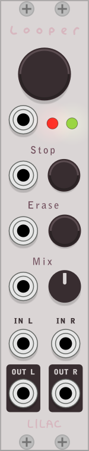

Recording a Loop
- To record a loop, press the big Toggle button once. The red record light will turn on and recording begins immediately.
- To stop recording the loop, press the Toggle button again once. The red record light will turn off. The green play light will turn on and the loop will begin playing immediately.
- The loop will play indefinitely. Each time the loop repeats, the green play light will turn off briefly.
Stopping and Starting Loop Playback
- To immediately stop loop playback, press the stop button once. The loop is automatically reset to the beginning.
- While stopped, press the big toggle button once to start playback.
Recording an Overdub
- To record an overdub, make sure a loop is playing. If a loop is not playing, press the Toggle button once to begin playback. The green play light will turn on and the loop will begin playing immediately.
- To start recording an overdub, press the Toggle button once. The red record light will turn on—together with the green play light—and audio will be recorded on top of the original loop.
- To stop overdubbing the loop, press the big Toggle button again once. The red record light will turn off and the loop will continue playing along with the overdubbed audio.
Looping Order
The looping order can be changed from the module's context menu. There are two options:
- Record → Play → Overdub
- Record → Overdub → Play
Adjusting the Loop Playback Level
- All the way to the left - you will hear only the live input signal
- The middle 12 o'clock position - you will hear an even mix of of the live input signal and loop playback
- All the way to the right - you will hear only the loop playback signal
Audio In & Out
[in progress]
Polyphony
[in progress]
Getting Help
If you'd like to report a problem or are having trouble using the plugin, please submit an issue.
This plugin is free to use and modify. If you're interested, take a look at the plugin source code.